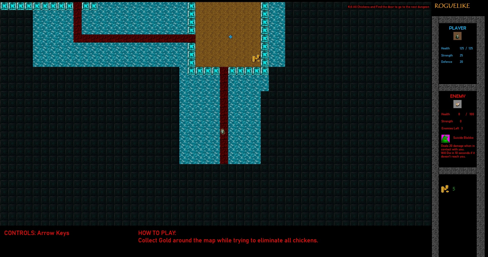

Projects
RogueLike Game
Written in C++/CLI. A game that uses maze generation algorithm for its maze. It is an Object-Oriented Program. Linked list data structure is created from scratch for storing sprites.

×

Pacman
Written in C#. It is an Object-Oriented Program. Inheritance and abstraction are used when creating the game. It has a chase function that allows Ghouls to chase Pacman. Power-ups and score are also implemented.
Here is the Link to the github repository.
Tournament quiz web-app
Written in Django/Python that uses REST APIs, Selenium WebDriver testing and Python Unittest.
I had deployed it here using Heroku.
Source Code can be found here.
Question Answering System
Written in Python. This system accepts a question from the user and returns an answer. It uses cosine similarity to find a set of text with the most semantic meaning with the question. The set of text is then fed into Hugging Face’s transformer model and it returns an answer to the users’ question. This project is supervised by David Rozado who holds a Ph.D in Computer Science from the Autonomous University of Madrid
Here is the colab notebook that contains the code for the back end of the project. It does not have the API set up to communicate with the front end. It is just a the back end demo code
Flutter Menu Application
Written in Flutter mobile framework. This is an minimalistic application that i built to learn about flutter and the application is written using the Bloc pattern architecture.
Here is the Link to the github repository.

1 / 4

4 / 4

❮
❯
Agile Methedologies
In our Software Engineering paper we are told to keep a portfolio when developing a web application. The portfolio contains details of the developement and Agile Methologies used throughout the developement. The portfolio can be view here
The finish product is writen in Laravel and it is hosted here